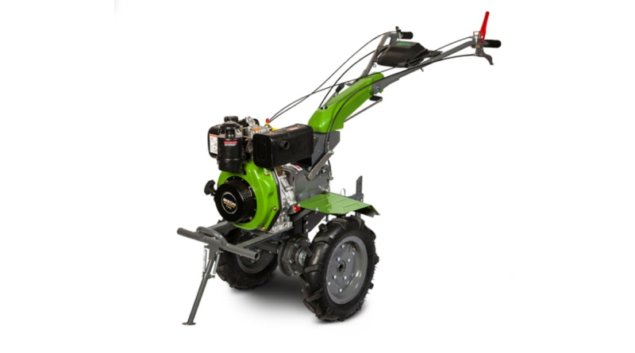
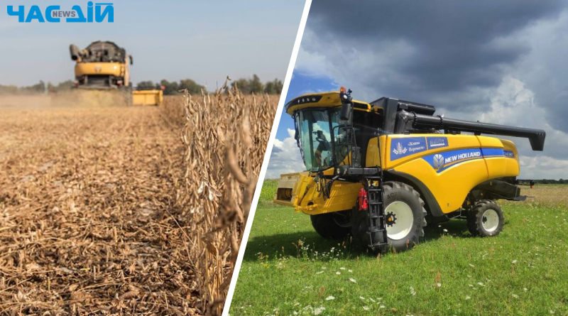

Рослинництво
Тваринництво
Агротехніка
Специфікації та характеристики двигунів для мотоблоків: ключові аспекти вибору потужності та надійності

Мотоблоки, як невід’ємна частина сучасного сільськогосподарського обладнання, використовують різноманітні типи двигунів для забезпечення ефективної роботи на полі. Мотозілла розгляне ключові специфікації та характеристики двигунів для мотоблоків, які допоможуть вам зробити осмислений вибір.
Техніка БФ “Жнива Перемоги”одночасно працює в 302 господарствах

Благодійний фонд “Жнива Перемоги” бʼє власні рекорди. Впродовж останніх двох тижнів техніка одночасно працює в 302 господарствах. Окрім цього, техніка збирає врожай в 198 фермерських господарствах. Зокрема збирається соя, кукурудза, гречка, соняшник.